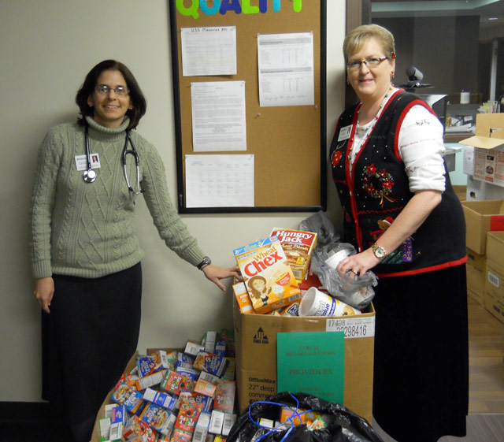

Health Center Collects for Holiday Food Drive
December 20, 2012
The Vermillion-Parke Community Health Center (VPCHC) recently held a holiday food drive, providing donations to local community food banks in Vermillion and Parke counties to benefit families within the area.
The health center staff raised a total of over 1,600 items, amongst the various staff departments and plans to hold the food drive as an annual event.
VPCHC appreciates the individuals and families we are able to serve through the local communities and wanted to share this appreciation by giving back,” stated Tiffani Martin, human resources manager. “This sparked the idea of having a holiday food drive with our staff.”
VPCHC is a Federally Qualified Health Center (FQHC) dedicated to providing comprehensive primary health care and related services for ALL individuals and families. VPCHC provides primary and preventive health care services, along with behavioral health services to the citizens of Vermillion and Parke counties, and surrounding communities.
VPCHC Clinton and Cayuga locations are open Monday - Friday, from 8:00 a.m. to 5:00 p.m. The After-Hours Clinic is open Monday - Thursday, 5:00 p.m. to 8:00 p.m., at the Clinton location. Contact the Clinton office at (765) 828-10030 or the Cayuga office at (765) 492-9042.

Medical provider, Dr. Elaine Chappell (left), and staff member Dee Taylor (right), spend time counting the number of donated food items from VPCHC’s holiday food drive. A total of over 1,600 items were collected and distributed to local food banks in Vermillion and Parke counties.